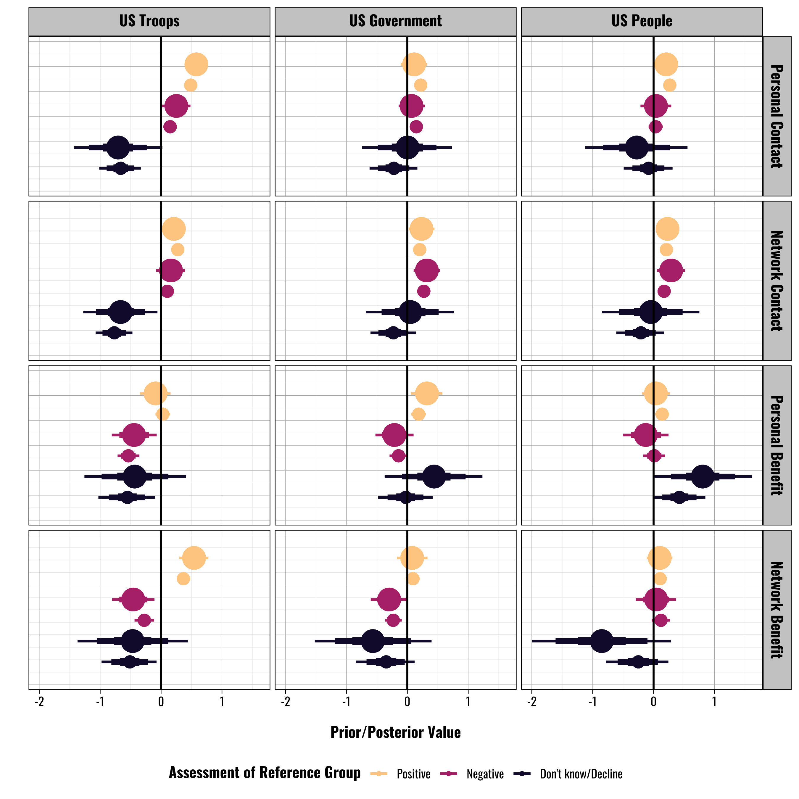

Chapter A.2 Deployments and Contact
This chapter contains supplementary information on the chapter exploring how contact and benefits relate to individual attitudes.
2.1 Survey Information
1 - Country Abbreviation (iso3c).
Uses the ISO3C abbreviation format.
Values:
AUS - Australia
BEL - Belgium
GMY - Germany
ITA - Italy
JPN - Japan
KUW - Kuwait
NTH - Netherlands
PHI - Philippines
POL - Poland
POR - Portugal
ROK - South Korea
SPN - Spain
TUR - Turkey
UKG - United Kingdom
2 - Language
The language the respondent took the survey in.
Values:
1 - English
2 - Dutch
3 - French
4 - German
5 - Italian
6 - Japanese
7 - Arabic
8 - Tagalog
9 - Polish
10 - Portuguese
11 - Korean
12 - Spanish
13 - Turkish
2.1.1 Dependent Variables
This subsection shows the available responses for the three questions that serve as the basis for our dependent variables. Please note that we recode these variables when we estimate our categorical logit models. For our primary models we collapse the six original categories down into four: 1) Positive views, 2) Negative views, 3) Neutral views, and 4) Don’t know/Decline to answer. This approach has a couple of advantages. First, while we prefer to collect data at a fine-grained level, we have little empirical or theoretical basis for evaluating the substantive difference between the “Somewhat” and “Very” categories. However, there is a clearer and more meaningful distinction between positive and negative views. Second, the simpler saves us a considerable amount of time given the computational intensity of the multilevel categorical models, which we discuss more below.
3 - Question: US Military Presence (troops_1)
“In general, what is your opinion of the presence of American military forces in (respondent’s country)?”
Values:
1 - Don’t know/decline to answer
2 - Very favorable
3 - Somewhat favorable
4 - Neutral
5 - Somewhat unfavorable
6 - Very unfavorable
4 - Question: American Government (american_gov)
“In general, what is your opinion of the American government?”
Values:
1 - Don’t know/decline to answer
2 - Very favorable
3 - Somewhat favorable
4 - Neutral
5 - Somewhat unfavorable
6 - Very unfavorable
5 - Question: American People (american_people)
“In general, what is your opinion of the American people?”
Values:
1 - Don’t know/decline to answer
2 - Very favorable
3 - Somewhat favorable
4 - Neutral
5 - Somewhat unfavorable
6 - Very unfavorable
2.1.2 Independent Variables
These variables represent either data coded automatically by our survey services or questions we asked the respondents. Note that almost all of these variables are treated as categorical/factor variables when estimating the models, and that the category numbers do not denote treatment as a continuous measure.
6 - Question: Direct Contact with US Military (contact_pers)
“Have you personally had direct contact with a member of the American military in (respondent’s country)?”
Values:
1 - Yes
2 - No
3 - Don’t know/Decline to answer
7 - Question: Family Contact with US Military (contact_nonpers)
“Has a member of your family or close friend had direct contact with a member of the American military stationed in (respondent’s country)?”
Values:
1 - Yes
2 - No
3 - Don’t know/Decline to answer
8 - Question: Economic benefit US Military (benefit_pers)
“Have you personally received a direct economic benefit from the American military presence in (respondent’s country)? Examples include employment by the US military, employment by a con- tractor that does business with the US military, or ownership/employment at a business that frequently serves US military personnel.”
Values:
1 - Yes
2 - No
3 - Don’t know/Decline to answer
9 - Question: Family Economic Benefit US Military (benefit_nonpers)
“Has a member of your family or close friend received a direct economic benefit from the American military presence in (respondent’s country)? Examples include employment by the US military, employment by a contractor that does business with the US military, or ownership/employment at a business that frequently serves US military personnel.”
Values:
1 - Yes
2 - No
3 - Don’t know/Decline to answer
10 - Question: Gender
What is your gender?
Values:
1 - Male
2 - Female
3 - Non-binary
4 - None of the above
11 - Question: Minority
Do you identify as a racial, ethnic, or religious minority?
Values:
1 - Yes
2 - No
3 - Decline to Answer
12 - Question: Education
How many years of formal education have you completed? Values: 0-99999
Note: Given a number of extreme outliers resulting from the open form/self-coding process we used in our surveys, we truncate the education variable in our analysis at 25 years when we estimate our models to eliminate extreme outliers. This covers up to 9 years of graduate education.
13 - Question: Age
What is your age? Values: 0-99999
14 - Question: Income - Schmeidl (incomesm)
What is your total household income during the past 12 months?
This question had six response categories for each of the six countries, which is the following. All categories are combined as 1-6 in the data. We recommend combining categories 5 and 6 to represent the upper income bracket to match the quintile distributions from the Qualtrics survey.
Values:
1 - Bottom Bracket
2 - 2nd Bracket
3 - 3rd Bracket
4 - 4th Bracket
5 - 5th Bracket
6 - Top Bracket
United Kingdom:
1 - <£20,000
2 - £20,000 - <£35,000
3 - £35,000 - <£50,000
4 - £50,000 - <£75,000
5 - £75,000 - <£100,000
6 - >£100,000
Germany:
1 - <20.000e
2 - 20.000e - 29.999e
3 - 30.000e - 39.999e
4 - 40.000e - 49.999e
5 - 50.000e - 59.000e
6 - >60.000e
Italy:
1 - <20.000e
2 - 20.000e - 29.999e
3 - 30.000e - 39.999e
4 - 40.000e - 49.999e
5 - 50.000e - 59.000e
6 - >60.000e
Kuwait: 1 - <3000 KWD 2 - 3 000 - less than 6 000 KWD 3 - 6 000 - less than 12 000 KWD 4 - 12 000 - less than 18 000 KWD 5 - 18 000 - less than 24000 KWD 6 - >24000 KWD
Japan:
1 - <2 million yen
2 - 2 million yen - less than 4 million yen
3 - 4 million yen - less than 7 million yen
4 - 7 million yen - less than 10 million yen
5 - 10 million yen - less than 15 million yen
6 - >15 million yen
South Korea
1 - <25 million KRW
2 - 25 million - less than 35 million KRW
3 - 35 million - less than 45 million KRW
4 - 45 million - less than 60 million KRW
5 - 60 million - less than 80 million KRW
6 - >80 million KRW
15 - Question: Religion
What is your religion, if any?
Values:
1 - Christianity (Protestant) 2 - Catholicism
3 - Islam
4 - Agnostic/Atheist
5 - Hinduism 6 - Buddhism 7 - Shinto
8 - Judaism
9 - Mormonism 10 - Local religion
11 - Other:
12 - Decline to Answer
16 - Question: Religion Other (religionother)
Open text responses for the Other bracket option in the previous question.
Value Range: Free-form text.
17 - Question: Political Views (ideology)
“People often talk about political issues and views in terms of a”left” and “right” spectrum. Using the following scale, where would you place yourself in terms of political views?”
Values:
1 - 1 - LEFT
2 - 2
3 - 3
4 - 4
5 - 5
6 - 6
7 - 7
8 - 8
9 - 9
10 - 10 - RIGHT
18 - Question: Favor Democracy (demgov)
“In general, how important is it to you that you live under a democratic government?”
Values:
1 - Very important
2 - Somewhat important
3 - Neutral
4 - Not important
5 - Don’t know/decline to answer
19 - Question: US Influence (Amount) (american_inf_1)
” In your opinion, how much influence does the United States have in (respondent’s country)?”
Values:
1 - A lot
2 - Some
3 - A little
4 - None
5 - Don’t know/Decline to answer
20 - Question: US Influence (Quality) (american_inf_2)
“In your opinion, the influence that the United States has in (respondent’s country) is. . .”
Values:
1 - Very positive
2 - Positive
3 - Neither Positive nor Negative 4 - Negative
5 - Very Negative
6 - Don’t know/Decline to answer
2.2 Survey Coverage
Figure @ref{fig:survey-map} shows the countries included in our analysis and help to illustrate the geographic coverage of our survey. Our initial rules for inclusion were based on a count of the countries that had an average of \(\geq100\) U.S. military personnel per year deployed within their borders since 1990. This yielded a fairly large initial sample of 34 countries. From this list we further identified the countries that had average annual deployment levels \(\geq\) 10,000 U.S. military personnel (the United Kingdoacm, Germany, Italy, South Korea, and Japan). We added Kuwait to this list as the value fell just below the 10,000 threshold. From there we proceeded to include other countries where the U.S. military presence was likely to be large enough to elicit a reaction from the public, thereby providing the variation we need the conduct our survey. We also focused on countries where the U.S. military had a historically notable presence, or cases that were of contemporary relevance.
For example, the average value for the Philippines is only 1,042 but the the long historical presence of U.S. military facilities in the Philippines, as well as that country’s status as a former colony, makes it an attractive case. Alternatively, Poland has an average score of 28 U.S. personnel since 1990, but with recent Russian aggression and the increase in U.S. personnel deployed to Poland, this is a case that is of great contemporary relevance for our analysis as it will help us to look at attitudes towards U.S. military personnel in a country that does not have a long-term history of hosting such deployments.
Other cases, like Belgium, Spain, the Netherlands, and Portugal allow us to assess variation in attitudes among countries that share a relatively similar geographic and political history, as well as countries who all belong to NATO. Further, countries like Portugal provide us with an opportunity to explore how variation in the type of U.S. military personnel affects attitudes, as it receives mostly Navy personnel as compared to the Army-heavy deployments in countries Germany.
Finally, there is a notable lack of countries represented in Africa and South America. This is for a couple of reasons. First, the only country in South America with a notable history of hosting U.S. military personnel is Panama. However, this is largely due to a brief spike in deployments following the U.S. invasion. In general, most Latin American countries have not played host to large long-term deployments in the way that countries in Europe and the Asia-Pacific region have. Those deployments that do occur in Latin America are generally short-term military exercises that tend to occur outside of the public’s view. Though there is some limited interaction with the public during some of these deployments, it is not of the same frequency or intensity as in other cases. Members of our team have addressed the effects of these types of deployments in other work, but we have opted to exclude them from our current survey effort so as to focus on other cases with a history of hosting larger deployments over long periods of time.
However, we have conducted fieldwork in two Latin American countries as a part of this project—Panama and Peru. Panama is of clear historic importance given both the Canal and the U.S. invasion in 1989; Peru has hosted multiple rounds of military exercises conducted by the U.S. military in conjunction with other partner countries throughout Latin American on an annual basis. In each case we interviewed U.S. military personnel, local politicians, journalists, and policymakers in an effort to better understand the nature of the U.S. military’s activities in these countries, as well as how the U.S. military relates to the host-state public. Given the smaller and more episodic nature of the deployments, we believe these interviews were a more effective approach for covering Latin America than the use of large-N surveys.
Similarly, U.S. longer-term deployments in Africa are relatively new, but most are still relatively small in scale. None of the countries on our base list counting those that averaged \(\geq\) 100 personnel per year were in Africa. Furthermore, those that are currently in Africa tend to be oriented towards military training and counter-terror operations. Unlike the larger deployments in Western Europe, these deployments are smaller and more focused in purpose, and do not tend to interact with the host-state population in the ways that deployments in other regions historically have.
Figure 2.1: Map of countries included in the survey. Color coding indicates which survey firm fielded the surveys in a given country.
2.3 Additional Descriptive Information
One detail that we wanted to convey in the book was just how out of step views of the US government often are compared with views of US military personnel and the American people. Figure 2.2 shows these differences by showing the percent of people in each country who responded with a favorable or unfavorable view of the group listed on the X axis.
Figure 2.2: Favorable and Unfavorable views of US actors. Categories aggregated to favorable and unfavorable based on a response of ‘Somewhat’ or ‘Very’.
For more detail how the countries vary in terms of reported forms of contact and benefits, Table 2.1 shows the proportion of people responding “Yes” in each country when asked about their contact experience or whether they receive personal economic benefits from a US military presence, or if they know someone who receives such an economic benefit.
| Country | Personal Contact | Personal Benefits | Network Contact | Network Benefits |
|---|---|---|---|---|
| Australia | 0.106 | 0.049 | 0.109 | 0.049 |
| Belgium | 0.100 | 0.060 | 0.118 | 0.068 |
| Germany | 0.251 | 0.049 | 0.246 | 0.072 |
| Italy | 0.092 | 0.046 | 0.115 | 0.067 |
| Japan | 0.084 | 0.033 | 0.080 | 0.033 |
| Kuwait | 0.328 | 0.337 | 0.345 | 0.345 |
| Netherlands | 0.084 | 0.062 | 0.093 | 0.076 |
| Philippines | 0.143 | 0.154 | 0.192 | 0.217 |
| Poland | 0.118 | 0.094 | 0.156 | 0.082 |
| Portugal | 0.096 | 0.052 | 0.127 | 0.063 |
| South Korea | 0.159 | 0.046 | 0.175 | 0.079 |
| Spain | 0.096 | 0.040 | 0.102 | 0.060 |
| Turkey | 0.117 | 0.113 | 0.128 | 0.126 |
| United Kingdom | 0.137 | 0.071 | 0.143 | 0.080 |
2.4 Supplemental Information on Models
2.4.1 Variables and Model Specifications
In the main text of the book we present the findings from a number of different models. We provide additional information here detailing the specifications of these different models, including data sources and transformations.
The opinion data we use come from a three-year long series of public opinion surveys conducted across 14 different countries. These data were collected using a research grant from the United States Department of Defense’s Minerva Research Initiative. All of the individual-level variables we use in the analysis are from this original data set. With the exception of the outcome variables we use to assess attitudes towards different U.S. actors, all of the variables used in the models retain their original forms as described in the survey. The outcome variables are condensed into general categories indicating whether or not respondents express a 1) positive, 2) negative, 3) neutral, or 4) don’t know/decline to answer response. We used the first year of these data in our earlier research on the subject (see Michael A. Allen et al. (2020)) We provide more details in the main text.
We also use a variety of country-level variables in our models, described below.
First, we measure the respondent’s country’s level of democracy using data from the Varieties of Democracy Project (Coppedge, Gerring, Knutsen, Lindberg, Teorell, Alizada, et al. 2021; Coppedge, Gerring, Knutsen, Lindberg, Teorell, Altman, et al. 2021). Specifically, we use the v2x_polyarchy variable. This variable is a composite of other indicator variables that code various aspects of a country’s democratic performance. This variable runs from 0 to 1 with higher values indicating more democratic countries and lower values indicating less democratic countries.
Second, we also include variables that measure the country’s total population and its gross domestic product (GDP). We obtain these data from the World Bank’s World Development Indicators dataset using the {wbstats} software package for R (Group 2021; Piburn, n.d.). Specifically, we use the SP.POP.TOTL and NY.GDP.MKTP.KD variables.
Third, we include measures of the number of U.S. military personnel deployed to the host country in a given year. To generate these values we use data obtained from the {troopdata} software package for R (Michael A. Allen, Flynn, and Machain 2021). These data originally come from the Defense Manpower Data Center and were initially compiled by Kane (2004).
Fourth, we include a count of the number of U.S. military bases within each region of the host country. We generate these variables using data from David Vine [Vine2015] contained in the {troopdata} package. We used the {raster} software package in R (Hijmans 2022) to generate shapefiles using the Database of Global Administrative Areas (GADM) (Global Administrative Areas 2021). We then use the {sp} software package to check for overlap between base locations and administrative regions. We then take the sum of the base locations that fall within each administrative area.
When running our models we use a standardized version of each of these variables. Specifically, this means that each value is divided by two standard deviations. While this can offer a number of benefits in interpreting variables (see Gelman (n.d.)) this approach also provides computational advantages by rescaling the predictor variables and reducing the variability in their range.
2.4.2 Further Discussions from Chapter 3
Before moving on to the next section, Figure @ref{fig:priorcomparison} compares the prior probability distributions used in our models, which represent our beliefs about the relationship between contact and perceptions using only 2018 the data from our previous research, to the posterior distributions, which represent the our beliefs about the relationship between our key variables, given our full sample of data.(Michael A. Allen et al. 2020) This figure can help us understand how much our findings have changed as a result of including two additional years of surveys in our analysis. The larger points represent the prior values, and the smaller ones represent the posterior estimates from the models in this chapter. The different colors of the points correspond to the respondents’ assessments of the US military, government, and people. The overall structure of the figure is similar to that of Figure @ref{fig:coefplot1}, but to streamline the presentation and focus on the most relevant quantities, we only include the values corresponding to the ``yes’’ responses for the contact and benefit variables.

In general, the results of our current analysis largely reflect the results of the previous analysis. The priors and posteriors for the positive and negative responses are reasonably close to one another. When we focus only on the positive and negative response categories, we see that in roughly two-thirds of the coefficient estimates, the current analysis produces slightly smaller coefficient estimates than in our previous study. To put it differently, in many cases, the addition of the new data appears to have pulled the coefficients in towards 0, producing smaller absolute values of the estimates. In the remaining cases, the updated estimates are roughly equivalent to the prior values or larger. However, these differences are fairly small across the board.
Where we see greater levels of divergence, it tends to be in the estimates of the “don’t know/decline” response categories. Further, in these cases, the current analysis generally produces smaller coefficient values for this response category. A smaller coefficient indicates that, across the different contact and benefit questions, individuals who respond “yes” to these questions are less different from those who responded “no” when giving a “don’t know/decline” response than our first analysis suggested.
Our takeaway here is that the results of the updated models are fairly consistent with our earlier modeling efforts. However the addition of new data and the tendency towards slightly smaller estimates suggests that the estimates in our previous models may have
2.4.3 Additional Note
The code for these models is available on Michael Flynn’s GitHub repository for the book. I would also direct readers’ to Jordan Nafa’s GitHub repository housing replication information for the 2018 article that preceded the book. Our initial APSR models took about 30 hours per model (times three models). We estimate several more models in the book, and we were able to obtain some efficiency gains and reduce run times by streamlining model specifications and using better and/or informed priors (see Michael A. Allen et al. 2020). Jordan’s code is much more efficient than the code we used to estimate our public opinion models, and he has greatly reduced model run times through a number of modifications to the basic code. I think he was able to get the models to run in about 2 hours per model. For now I’ve just linked to Jordan’s general GitHub repo, but I’ll narrow the link to the specific repo for the replication code when I get it. For now, just know that there are ways to significantly improve upon the basic code we used.
2.4.4 Prior Specification Tables
We set the priors on the primary population-level coefficients using the coefficient values from the results of our earlier research on this subject (Michael A. Allen et al. 2020).
| prior | class | coef | group | resp | dpar | nlpar | lb | ub | source |
|---|---|---|---|---|---|---|---|---|---|
| normal(0,3) | Intercept | mudk | default | ||||||
| normal(0,3) | Intercept | muneg | default | ||||||
| normal(0,3) | Intercept | mupos | default | ||||||
| lkj_corr_cholesky(1) | L | default | |||||||
| L | country | default | |||||||
| normal(0,2) | b | mudk | default | ||||||
| normal(-0.16,0.17) | b | age25to34years | mudk | ||||||
| normal(-0.41,0.17) | b | age35to44years | mudk | ||||||
| normal(-0.36,0.18) | b | age45to54years | mudk | ||||||
| normal(-0.75,0.19) | b | age55to64years | mudk | ||||||
| normal(-0.98,0.23) | b | ageAge65orolder | mudk | ||||||
| normal(-0.56,0.3) | b | american_inf_1Alittle | mudk | ||||||
| normal(-0.25,0.3) | b | american_inf_1Alot | mudk | ||||||
| normal(0.55,0.32) | b | american_inf_1DontknowDdeclinetoanswer | mudk | ||||||
| normal(-0.13,0.29) | b | american_inf_1Some | mudk | ||||||
| normal(2.12,0.18) | b | american_inf_2DontknowDdeclinetoanswer | mudk | ||||||
| normal(0.33,0.15) | b | american_inf_2Negative | mudk | ||||||
| normal(0.24,0.18) | b | american_inf_2Positive | mudk | ||||||
| normal(0.64,0.28) | b | american_inf_2Verynegative | mudk | ||||||
| normal(0.48,0.41) | b | american_inf_2Verypositive | mudk | ||||||
| b | basecount_z | mudk | default | ||||||
| normal(0.34,0.23) | b | benefit_nonpersDontknowDdeclinetoanswer | mudk | ||||||
| normal(-0.47,0.46) | b | benefit_nonpersYes | mudk | ||||||
| normal(0.44,0.24) | b | benefit_persDontknowDdeclinetoanswer | mudk | ||||||
| normal(-0.43,0.43) | b | benefit_persYes | mudk | ||||||
| normal(-0.7,0.28) | b | contact_nonpersDontknowDdeclinetoanswer | mudk | ||||||
| normal(-0.66,0.31) | b | contact_nonpersYes | mudk | ||||||
| normal(0.56,0.29) | b | contact_persDontknowDdeclinetoanswer | mudk | ||||||
| normal(-0.71,0.37) | b | contact_persYes | mudk | ||||||
| b | ed_z | mudk | default | ||||||
| b | gdp_z | mudk | default | ||||||
| normal(0.08,0.11) | b | genderFemale | mudk | ||||||
| normal(-79.98,60.28) | b | genderNonMbinary | mudk | ||||||
| normal(0.08,0.98) | b | genderNoneoftheabove | mudk | ||||||
| b | ideology_z | mudk | default | ||||||
| b | income.5.cat21M40% | mudk | default | ||||||
| b | income.5.cat41M60% | mudk | default | ||||||
| b | income.5.cat61M80% | mudk | default | ||||||
| b | income.5.cat81M100% | mudk | default | ||||||
| b | minorityDeclinetoanswer | mudk | default | ||||||
| normal(-0.28,0.28) | b | minorityYes | mudk | ||||||
| b | pop_z | mudk | default | ||||||
| normal(0.06,0.39) | b | religBuddhism | mudk | ||||||
| normal(0.25,0.19) | b | religCatholicism | mudk | ||||||
| b | religChristianityprotestant | mudk | default | ||||||
| normal(0.07,0.22) | b | religDeclinetoanswer | mudk | ||||||
| normal(0.24,0.73) | b | religHinduism | mudk | ||||||
| normal(0.21,0.31) | b | religIslam | mudk | ||||||
| normal(1.05,0.61) | b | religJudaism | mudk | ||||||
| normal(-0.66,0.69) | b | religLocal | mudk | ||||||
| b | religLocalreligion | mudk | default | ||||||
| normal(-80.74,61.19) | b | religMormonism | mudk | ||||||
| normal(-0.02,0.22) | b | religOther | mudk | ||||||
| normal(0.09,0.21) | b | religProtestant | mudk | ||||||
| normal(-79.93,60.96) | b | religShinto | mudk | ||||||
| b | troops_crime_persDontknowDdeclinetoanswer | mudk | default | ||||||
| b | troops_crime_persYes | mudk | default | ||||||
| b | troops_z | mudk | default | ||||||
| normal(0,2) | b | muneg | default | ||||||
| normal(0.21,0.1) | b | age25to34years | muneg | ||||||
| normal(0.03,0.1) | b | age35to44years | muneg | ||||||
| normal(-0.19,0.1) | b | age45to54years | muneg | ||||||
| normal(-0.2,0.1) | b | age55to64years | muneg | ||||||
| normal(-0.08,0.12) | b | ageAge65orolder | muneg | ||||||
| normal(-0.51,0.18) | b | american_inf_1Alittle | muneg | ||||||
| normal(-0.04,0.17) | b | american_inf_1Alot | muneg | ||||||
| normal(-0.99,0.25) | b | american_inf_1DontknowDdeclinetoanswer | muneg | ||||||
| normal(-0.34,0.17) | b | american_inf_1Some | muneg | ||||||
| normal(0.42,0.17) | b | american_inf_2DontknowDdeclinetoanswer | muneg | ||||||
| normal(1.15,0.07) | b | american_inf_2Negative | muneg | ||||||
| normal(-0.28,0.1) | b | american_inf_2Positive | muneg | ||||||
| normal(1.96,0.13) | b | american_inf_2Verynegative | muneg | ||||||
| normal(-0.2,0.24) | b | american_inf_2Verypositive | muneg | ||||||
| b | basecount_z | muneg | default | ||||||
| normal(-0.38,0.18) | b | benefit_nonpersDontknowDdeclinetoanswer | muneg | ||||||
| normal(-0.46,0.18) | b | benefit_nonpersYes | muneg | ||||||
| normal(-0.32,0.2) | b | benefit_persDontknowDdeclinetoanswer | muneg | ||||||
| normal(-0.44,0.19) | b | benefit_persYes | muneg | ||||||
| normal(0.04,0.16) | b | contact_nonpersDontknowDdeclinetoanswer | muneg | ||||||
| normal(0.16,0.12) | b | contact_nonpersYes | muneg | ||||||
| normal(-0.1,0.22) | b | contact_persDontknowDdeclinetoanswer | muneg | ||||||
| normal(0.25,0.12) | b | contact_persYes | muneg | ||||||
| b | ed_z | muneg | default | ||||||
| b | gdp_z | muneg | default | ||||||
| normal(-0.1,0.06) | b | genderFemale | muneg | ||||||
| normal(-0.62,0.76) | b | genderNonMbinary | muneg | ||||||
| normal(-0.37,0.76) | b | genderNoneoftheabove | muneg | ||||||
| b | ideology_z | muneg | default | ||||||
| b | income.5.cat21M40% | muneg | default | ||||||
| b | income.5.cat41M60% | muneg | default | ||||||
| b | income.5.cat61M80% | muneg | default | ||||||
| b | income.5.cat81M100% | muneg | default | ||||||
| b | minorityDeclinetoanswer | muneg | default | ||||||
| normal(0.1,0.18) | b | minorityYes | muneg | ||||||
| b | pop_z | muneg | default | ||||||
| normal(-0.52,0.16) | b | religBuddhism | muneg | ||||||
| normal(-0.45,0.1) | b | religCatholicism | muneg | ||||||
| b | religChristianityprotestant | muneg | default | ||||||
| normal(-0.33,0.12) | b | religDeclinetoanswer | muneg | ||||||
| normal(-0.21,0.47) | b | religHinduism | muneg | ||||||
| normal(0.34,0.18) | b | religIslam | muneg | ||||||
| normal(-0.64,0.61) | b | religJudaism | muneg | ||||||
| normal(-0.36,0.3) | b | religLocal | muneg | ||||||
| b | religLocalreligion | muneg | default | ||||||
| normal(0.02,0.84) | b | religMormonism | muneg | ||||||
| normal(-0.15,0.11) | b | religOther | muneg | ||||||
| normal(-0.41,0.11) | b | religProtestant | muneg | ||||||
| normal(-0.39,0.49) | b | religShinto | muneg | ||||||
| b | troops_crime_persDontknowDdeclinetoanswer | muneg | default | ||||||
| b | troops_crime_persYes | muneg | default | ||||||
| b | troops_z | muneg | default | ||||||
| normal(0,2) | b | mupos | default | ||||||
| normal(-0.08,0.09) | b | age25to34years | mupos | ||||||
| normal(-0.06,0.09) | b | age35to44years | mupos | ||||||
| normal(-0.15,0.09) | b | age45to54years | mupos | ||||||
| normal(0.06,0.09) | b | age55to64years | mupos | ||||||
| normal(0.22,0.1) | b | ageAge65orolder | mupos | ||||||
| normal(0.02,0.17) | b | american_inf_1Alittle | mupos | ||||||
| normal(0.5,0.17) | b | american_inf_1Alot | mupos | ||||||
| normal(-0.29,0.23) | b | american_inf_1DontknowDdeclinetoanswer | mupos | ||||||
| normal(0.15,0.17) | b | american_inf_1Some | mupos | ||||||
| normal(-0.18,0.17) | b | american_inf_2DontknowDdeclinetoanswer | mupos | ||||||
| normal(-0.4,0.07) | b | american_inf_2Negative | mupos | ||||||
| normal(1.17,0.06) | b | american_inf_2Positive | mupos | ||||||
| normal(-0.61,0.17) | b | american_inf_2Verynegative | mupos | ||||||
| normal(1.8,0.14) | b | american_inf_2Verypositive | mupos | ||||||
| b | basecount_z | mupos | default | ||||||
| normal(-0.2,0.15) | b | benefit_nonpersDontknowDdeclinetoanswer | mupos | ||||||
| normal(0.54,0.12) | b | benefit_nonpersYes | mupos | ||||||
| normal(-0.26,0.17) | b | benefit_persDontknowDdeclinetoanswer | mupos | ||||||
| normal(-0.09,0.13) | b | benefit_persYes | mupos | ||||||
| normal(0.13,0.13) | b | contact_nonpersDontknowDdeclinetoanswer | mupos | ||||||
| normal(0.21,0.09) | b | contact_nonpersYes | mupos | ||||||
| normal(-0.4,0.2) | b | contact_persDontknowDdeclinetoanswer | mupos | ||||||
| normal(0.58,0.1) | b | contact_persYes | mupos | ||||||
| b | ed_z | mupos | default | ||||||
| b | gdp_z | mupos | default | ||||||
| normal(-0.05,0.05) | b | genderFemale | mupos | ||||||
| normal(-0.41,0.41) | b | genderNonMbinary | mupos | ||||||
| normal(-1.46,0.7) | b | genderNoneoftheabove | mupos | ||||||
| b | ideology_z | mupos | default | ||||||
| b | income.5.cat21M40% | mupos | default | ||||||
| b | income.5.cat41M60% | mupos | default | ||||||
| b | income.5.cat61M80% | mupos | default | ||||||
| b | income.5.cat81M100% | mupos | default | ||||||
| b | minorityDeclinetoanswer | mupos | default | ||||||
| normal(0.04,0.16) | b | minorityYes | mupos | ||||||
| b | pop_z | mupos | default | ||||||
| normal(0.04,0.14) | b | religBuddhism | mupos | ||||||
| normal(0.12,0.09) | b | religCatholicism | mupos | ||||||
| b | religChristianityprotestant | mupos | default | ||||||
| normal(-0.15,0.12) | b | religDeclinetoanswer | mupos | ||||||
| normal(-0.11,0.26) | b | religHinduism | mupos | ||||||
| normal(-0.25,0.15) | b | religIslam | mupos | ||||||
| normal(0.06,0.25) | b | religJudaism | mupos | ||||||
| normal(-0.16,0.26) | b | religLocal | mupos | ||||||
| b | religLocalreligion | mupos | default | ||||||
| normal(0.16,0.74) | b | religMormonism | mupos | ||||||
| normal(-0.12,0.11) | b | religOther | mupos | ||||||
| normal(0.19,0.09) | b | religProtestant | mupos | ||||||
| normal(-0.1,0.41) | b | religShinto | mupos | ||||||
| b | troops_crime_persDontknowDdeclinetoanswer | mupos | default | ||||||
| b | troops_crime_persYes | mupos | default | ||||||
| b | troops_z | mupos | default | ||||||
| gamma(1, 1) | sd | mudk | 0 | default | |||||
| gamma(1, 1) | sd | muneg | 0 | default | |||||
| gamma(1, 1) | sd | mupos | 0 | default | |||||
| gamma(1, 1) | sd | country | mudk | default | |||||
| sd | Intercept | country | mudk | default | |||||
| gamma(1, 1) | sd | country | muneg | default | |||||
| sd | Intercept | country | muneg | default | |||||
| gamma(1, 1) | sd | country | mupos | default | |||||
| sd | Intercept | country | mupos | default |
| prior | class | coef | group | resp | dpar | nlpar | lb | ub | source |
|---|---|---|---|---|---|---|---|---|---|
| normal(0,3) | Intercept | mudk | default | ||||||
| normal(0,3) | Intercept | muneg | default | ||||||
| normal(0,3) | Intercept | mupos | default | ||||||
| lkj_corr_cholesky(1) | L | default | |||||||
| L | country | default | |||||||
| normal(0,2) | b | mudk | default | ||||||
| normal(-0.17,0.26) | b | age25to34years | mudk | ||||||
| normal(0.09,0.25) | b | age35to44years | mudk | ||||||
| normal(0.1,0.26) | b | age45to54years | mudk | ||||||
| normal(0.05,0.27) | b | age55to64years | mudk | ||||||
| normal(-0.17,0.35) | b | ageAge65orolder | mudk | ||||||
| normal(-1.63,0.42) | b | american_inf_1Alittle | mudk | ||||||
| normal(-0.98,0.38) | b | american_inf_1Alot | mudk | ||||||
| normal(0.14,0.38) | b | american_inf_1DontknowDdeclinetoanswer | mudk | ||||||
| normal(-0.82,0.35) | b | american_inf_1Some | mudk | ||||||
| normal(2.05,0.25) | b | american_inf_2DontknowDdeclinetoanswer | mudk | ||||||
| normal(0.38,0.29) | b | american_inf_2Negative | mudk | ||||||
| normal(-0.05,0.27) | b | american_inf_2Positive | mudk | ||||||
| normal(1.49,0.47) | b | american_inf_2Verynegative | mudk | ||||||
| normal(1.01,0.46) | b | american_inf_2Verypositive | mudk | ||||||
| b | basecount_z | mudk | default | ||||||
| normal(0.07,0.3) | b | benefit_nonpersDontknowDdeclinetoanswer | mudk | ||||||
| normal(-0.57,0.49) | b | benefit_nonpersYes | mudk | ||||||
| normal(0.24,0.32) | b | benefit_persDontknowDdeclinetoanswer | mudk | ||||||
| normal(0.44,0.41) | b | benefit_persYes | mudk | ||||||
| normal(0.29,0.33) | b | contact_nonpersDontknowDdeclinetoanswer | mudk | ||||||
| normal(0.05,0.37) | b | contact_nonpersYes | mudk | ||||||
| normal(-0.28,0.39) | b | contact_persDontknowDdeclinetoanswer | mudk | ||||||
| normal(0,0.38) | b | contact_persYes | mudk | ||||||
| b | ed_z | mudk | default | ||||||
| b | gdp_z | mudk | default | ||||||
| normal(-0.1,0.16) | b | genderFemale | mudk | ||||||
| normal(1.7,0.93) | b | genderNonMbinary | mudk | ||||||
| normal(-79.93,60.03) | b | genderNoneoftheabove | mudk | ||||||
| b | ideology_z | mudk | default | ||||||
| b | income.5.cat21M40% | mudk | default | ||||||
| b | income.5.cat41M60% | mudk | default | ||||||
| b | income.5.cat61M80% | mudk | default | ||||||
| b | income.5.cat81M100% | mudk | default | ||||||
| b | minorityDeclinetoanswer | mudk | default | ||||||
| normal(-0.26,0.34) | b | minorityYes | mudk | ||||||
| b | pop_z | mudk | default | ||||||
| normal(0.14,0.55) | b | religBuddhism | mudk | ||||||
| normal(0.56,0.33) | b | religCatholicism | mudk | ||||||
| b | religChristianityprotestant | mudk | default | ||||||
| normal(0.86,0.34) | b | religDeclinetoanswer | mudk | ||||||
| normal(0.63,0.81) | b | religHinduism | mudk | ||||||
| normal(0.52,0.44) | b | religIslam | mudk | ||||||
| normal(1.8,0.66) | b | religJudaism | mudk | ||||||
| normal(1.43,0.61) | b | religLocal | mudk | ||||||
| b | religLocalreligion | mudk | default | ||||||
| normal(-77.41,61.07) | b | religMormonism | mudk | ||||||
| normal(0.38,0.39) | b | religOther | mudk | ||||||
| normal(0.19,0.38) | b | religProtestant | mudk | ||||||
| normal(1.96,0.95) | b | religShinto | mudk | ||||||
| b | troops_crime_persDontknowDdeclinetoanswer | mudk | default | ||||||
| b | troops_crime_persYes | mudk | default | ||||||
| b | troops_z | mudk | default | ||||||
| normal(0,2) | b | muneg | default | ||||||
| normal(-0.19,0.1) | b | age25to34years | muneg | ||||||
| normal(-0.15,0.1) | b | age35to44years | muneg | ||||||
| normal(-0.12,0.1) | b | age45to54years | muneg | ||||||
| normal(0.01,0.1) | b | age55to64years | muneg | ||||||
| normal(0.17,0.11) | b | ageAge65orolder | muneg | ||||||
| normal(-0.12,0.17) | b | american_inf_1Alittle | muneg | ||||||
| normal(0.08,0.17) | b | american_inf_1Alot | muneg | ||||||
| normal(-0.72,0.22) | b | american_inf_1DontknowDdeclinetoanswer | muneg | ||||||
| normal(-0.09,0.17) | b | american_inf_1Some | muneg | ||||||
| normal(0.28,0.15) | b | american_inf_2DontknowDdeclinetoanswer | muneg | ||||||
| normal(1.58,0.08) | b | american_inf_2Negative | muneg | ||||||
| normal(-0.4,0.07) | b | american_inf_2Positive | muneg | ||||||
| normal(2.79,0.2) | b | american_inf_2Verynegative | muneg | ||||||
| normal(-0.61,0.21) | b | american_inf_2Verypositive | muneg | ||||||
| b | basecount_z | muneg | default | ||||||
| normal(-0.12,0.16) | b | benefit_nonpersDontknowDdeclinetoanswer | muneg | ||||||
| normal(-0.3,0.15) | b | benefit_nonpersYes | muneg | ||||||
| normal(-0.52,0.18) | b | benefit_persDontknowDdeclinetoanswer | muneg | ||||||
| normal(-0.21,0.16) | b | benefit_persYes | muneg | ||||||
| normal(-0.1,0.15) | b | contact_nonpersDontknowDdeclinetoanswer | muneg | ||||||
| normal(0.32,0.11) | b | contact_nonpersYes | muneg | ||||||
| normal(-0.7,0.21) | b | contact_persDontknowDdeclinetoanswer | muneg | ||||||
| normal(0.07,0.11) | b | contact_persYes | muneg | ||||||
| b | ed_z | muneg | default | ||||||
| b | gdp_z | muneg | default | ||||||
| normal(0.02,0.05) | b | genderFemale | muneg | ||||||
| normal(0.44,0.6) | b | genderNonMbinary | muneg | ||||||
| normal(-0.03,0.65) | b | genderNoneoftheabove | muneg | ||||||
| b | ideology_z | muneg | default | ||||||
| b | income.5.cat21M40% | muneg | default | ||||||
| b | income.5.cat41M60% | muneg | default | ||||||
| b | income.5.cat61M80% | muneg | default | ||||||
| b | income.5.cat81M100% | muneg | default | ||||||
| b | minorityDeclinetoanswer | muneg | default | ||||||
| normal(-0.07,0.16) | b | minorityYes | muneg | ||||||
| b | pop_z | muneg | default | ||||||
| normal(-0.55,0.16) | b | religBuddhism | muneg | ||||||
| normal(-0.34,0.1) | b | religCatholicism | muneg | ||||||
| b | religChristianityprotestant | muneg | default | ||||||
| normal(-0.48,0.12) | b | religDeclinetoanswer | muneg | ||||||
| normal(-0.71,0.41) | b | religHinduism | muneg | ||||||
| normal(0.35,0.18) | b | religIslam | muneg | ||||||
| normal(-1.43,0.55) | b | religJudaism | muneg | ||||||
| normal(-1.03,0.3) | b | religLocal | muneg | ||||||
| b | religLocalreligion | muneg | default | ||||||
| normal(2.3,1.44) | b | religMormonism | muneg | ||||||
| normal(-0.12,0.11) | b | religOther | muneg | ||||||
| normal(-0.46,0.11) | b | religProtestant | muneg | ||||||
| normal(-1.41,0.58) | b | religShinto | muneg | ||||||
| b | troops_crime_persDontknowDdeclinetoanswer | muneg | default | ||||||
| b | troops_crime_persYes | muneg | default | ||||||
| b | troops_z | muneg | default | ||||||
| normal(0,2) | b | mupos | default | ||||||
| normal(-0.06,0.1) | b | age25to34years | mupos | ||||||
| normal(0.06,0.1) | b | age35to44years | mupos | ||||||
| normal(-0.03,0.1) | b | age45to54years | mupos | ||||||
| normal(0.04,0.1) | b | age55to64years | mupos | ||||||
| normal(0.15,0.11) | b | ageAge65orolder | mupos | ||||||
| normal(0.27,0.2) | b | american_inf_1Alittle | mupos | ||||||
| normal(0.56,0.2) | b | american_inf_1Alot | mupos | ||||||
| normal(-0.84,0.29) | b | american_inf_1DontknowDdeclinetoanswer | mupos | ||||||
| normal(0.1,0.2) | b | american_inf_1Some | mupos | ||||||
| normal(-0.26,0.2) | b | american_inf_2DontknowDdeclinetoanswer | mupos | ||||||
| normal(-0.01,0.11) | b | american_inf_2Negative | mupos | ||||||
| normal(1.39,0.07) | b | american_inf_2Positive | mupos | ||||||
| normal(0.28,0.26) | b | american_inf_2Verynegative | mupos | ||||||
| normal(2.28,0.14) | b | american_inf_2Verypositive | mupos | ||||||
| b | basecount_z | mupos | default | ||||||
| normal(-0.06,0.16) | b | benefit_nonpersDontknowDdeclinetoanswer | mupos | ||||||
| normal(0.08,0.13) | b | benefit_nonpersYes | mupos | ||||||
| normal(0.04,0.18) | b | benefit_persDontknowDdeclinetoanswer | mupos | ||||||
| normal(0.32,0.13) | b | benefit_persYes | mupos | ||||||
| normal(0.18,0.15) | b | contact_nonpersDontknowDdeclinetoanswer | mupos | ||||||
| normal(0.23,0.11) | b | contact_nonpersYes | mupos | ||||||
| normal(-0.51,0.21) | b | contact_persDontknowDdeclinetoanswer | mupos | ||||||
| normal(0.11,0.11) | b | contact_persYes | mupos | ||||||
| b | ed_z | mupos | default | ||||||
| b | gdp_z | mupos | default | ||||||
| normal(0.03,0.05) | b | genderFemale | mupos | ||||||
| normal(-0.14,0.5) | b | genderNonMbinary | mupos | ||||||
| normal(-0.79,0.73) | b | genderNoneoftheabove | mupos | ||||||
| b | ideology_z | mupos | default | ||||||
| b | income.5.cat21M40% | mupos | default | ||||||
| b | income.5.cat41M60% | mupos | default | ||||||
| b | income.5.cat61M80% | mupos | default | ||||||
| b | income.5.cat81M100% | mupos | default | ||||||
| b | minorityDeclinetoanswer | mupos | default | ||||||
| normal(0.27,0.18) | b | minorityYes | mupos | ||||||
| b | pop_z | mupos | default | ||||||
| normal(0.04,0.15) | b | religBuddhism | mupos | ||||||
| normal(-0.05,0.11) | b | religCatholicism | mupos | ||||||
| b | religChristianityprotestant | mupos | default | ||||||
| normal(-0.19,0.14) | b | religDeclinetoanswer | mupos | ||||||
| normal(-0.32,0.27) | b | religHinduism | mupos | ||||||
| normal(-0.31,0.16) | b | religIslam | mupos | ||||||
| normal(0.09,0.26) | b | religJudaism | mupos | ||||||
| normal(0.01,0.29) | b | religLocal | mupos | ||||||
| b | religLocalreligion | mupos | default | ||||||
| normal(1.97,1.39) | b | religMormonism | mupos | ||||||
| normal(-0.01,0.13) | b | religOther | mupos | ||||||
| normal(0.01,0.11) | b | religProtestant | mupos | ||||||
| normal(0.06,0.41) | b | religShinto | mupos | ||||||
| b | troops_crime_persDontknowDdeclinetoanswer | mupos | default | ||||||
| b | troops_crime_persYes | mupos | default | ||||||
| b | troops_z | mupos | default | ||||||
| gamma(1, 1) | sd | mudk | 0 | default | |||||
| gamma(1, 1) | sd | muneg | 0 | default | |||||
| gamma(1, 1) | sd | mupos | 0 | default | |||||
| gamma(1, 1) | sd | country | mudk | default | |||||
| sd | Intercept | country | mudk | default | |||||
| gamma(1, 1) | sd | country | muneg | default | |||||
| sd | Intercept | country | muneg | default | |||||
| gamma(1, 1) | sd | country | mupos | default | |||||
| sd | Intercept | country | mupos | default |
| prior | class | coef | group | resp | dpar | nlpar | lb | ub | source |
|---|---|---|---|---|---|---|---|---|---|
| normal(0,3) | Intercept | mudk | default | ||||||
| normal(0,3) | Intercept | muneg | default | ||||||
| normal(0,3) | Intercept | mupos | default | ||||||
| lkj_corr_cholesky(1) | L | default | |||||||
| L | country | default | |||||||
| normal(0,2) | b | mudk | default | ||||||
| normal(0.29,0.26) | b | age25to34years | mudk | ||||||
| normal(-0.01,0.28) | b | age35to44years | mudk | ||||||
| normal(0.29,0.28) | b | age45to54years | mudk | ||||||
| normal(0.29,0.29) | b | age55to64years | mudk | ||||||
| normal(0.12,0.36) | b | ageAge65orolder | mudk | ||||||
| normal(-1.06,0.43) | b | american_inf_1Alittle | mudk | ||||||
| normal(-0.93,0.43) | b | american_inf_1Alot | mudk | ||||||
| normal(0.1,0.43) | b | american_inf_1DontknowDdeclinetoanswer | mudk | ||||||
| normal(-0.75,0.4) | b | american_inf_1Some | mudk | ||||||
| normal(1.81,0.26) | b | american_inf_2DontknowDdeclinetoanswer | mudk | ||||||
| normal(-0.39,0.3) | b | american_inf_2Negative | mudk | ||||||
| normal(0.34,0.28) | b | american_inf_2Positive | mudk | ||||||
| normal(0.14,0.43) | b | american_inf_2Verynegative | mudk | ||||||
| normal(1.3,0.54) | b | american_inf_2Verypositive | mudk | ||||||
| b | basecount_z | mudk | default | ||||||
| normal(0.23,0.31) | b | benefit_nonpersDontknowDdeclinetoanswer | mudk | ||||||
| normal(-0.86,0.59) | b | benefit_nonpersYes | mudk | ||||||
| normal(0.1,0.34) | b | benefit_persDontknowDdeclinetoanswer | mudk | ||||||
| normal(0.81,0.41) | b | benefit_persYes | mudk | ||||||
| normal(0.43,0.33) | b | contact_nonpersDontknowDdeclinetoanswer | mudk | ||||||
| normal(-0.05,0.41) | b | contact_nonpersYes | mudk | ||||||
| normal(0.28,0.39) | b | contact_persDontknowDdeclinetoanswer | mudk | ||||||
| normal(-0.27,0.43) | b | contact_persYes | mudk | ||||||
| b | ed_z | mudk | default | ||||||
| b | gdp_z | mudk | default | ||||||
| normal(0.16,0.16) | b | genderFemale | mudk | ||||||
| normal(-79.44,60.23) | b | genderNonMbinary | mudk | ||||||
| normal(1.18,1.65) | b | genderNoneoftheabove | mudk | ||||||
| b | ideology_z | mudk | default | ||||||
| b | income.5.cat21M40% | mudk | default | ||||||
| b | income.5.cat41M60% | mudk | default | ||||||
| b | income.5.cat61M80% | mudk | default | ||||||
| b | income.5.cat81M100% | mudk | default | ||||||
| b | minorityDeclinetoanswer | mudk | default | ||||||
| normal(-0.64,0.36) | b | minorityYes | mudk | ||||||
| b | pop_z | mudk | default | ||||||
| normal(-0.11,0.51) | b | religBuddhism | mudk | ||||||
| normal(-0.19,0.31) | b | religCatholicism | mudk | ||||||
| b | religChristianityprotestant | mudk | default | ||||||
| normal(0.32,0.32) | b | religDeclinetoanswer | mudk | ||||||
| normal(-0.01,0.96) | b | religHinduism | mudk | ||||||
| normal(0.22,0.44) | b | religIslam | mudk | ||||||
| normal(-1.02,1.37) | b | religJudaism | mudk | ||||||
| normal(0.92,0.63) | b | religLocal | mudk | ||||||
| b | religLocalreligion | mudk | default | ||||||
| normal(-78.48,60.36) | b | religMormonism | mudk | ||||||
| normal(-0.12,0.37) | b | religOther | mudk | ||||||
| normal(0.1,0.34) | b | religProtestant | mudk | ||||||
| normal(-79.18,60.32) | b | religShinto | mudk | ||||||
| b | troops_crime_persDontknowDdeclinetoanswer | mudk | default | ||||||
| b | troops_crime_persYes | mudk | default | ||||||
| b | troops_z | mudk | default | ||||||
| normal(0,2) | b | muneg | default | ||||||
| normal(-0.12,0.1) | b | age25to34years | muneg | ||||||
| normal(-0.43,0.11) | b | age35to44years | muneg | ||||||
| normal(-0.36,0.11) | b | age45to54years | muneg | ||||||
| normal(-0.69,0.12) | b | age55to64years | muneg | ||||||
| normal(-0.41,0.13) | b | ageAge65orolder | muneg | ||||||
| normal(-0.44,0.18) | b | american_inf_1Alittle | muneg | ||||||
| normal(-0.38,0.17) | b | american_inf_1Alot | muneg | ||||||
| normal(-0.87,0.26) | b | american_inf_1DontknowDdeclinetoanswer | muneg | ||||||
| normal(-0.65,0.17) | b | american_inf_1Some | muneg | ||||||
| normal(-0.14,0.2) | b | american_inf_2DontknowDdeclinetoanswer | muneg | ||||||
| normal(1.15,0.08) | b | american_inf_2Negative | muneg | ||||||
| normal(-0.28,0.13) | b | american_inf_2Positive | muneg | ||||||
| normal(1.76,0.12) | b | american_inf_2Verynegative | muneg | ||||||
| normal(0.36,0.28) | b | american_inf_2Verypositive | muneg | ||||||
| b | basecount_z | muneg | default | ||||||
| normal(0.26,0.19) | b | benefit_nonpersDontknowDdeclinetoanswer | muneg | ||||||
| normal(0.04,0.17) | b | benefit_nonpersYes | muneg | ||||||
| normal(-0.41,0.22) | b | benefit_persDontknowDdeclinetoanswer | muneg | ||||||
| normal(-0.13,0.19) | b | benefit_persYes | muneg | ||||||
| normal(0.07,0.17) | b | contact_nonpersDontknowDdeclinetoanswer | muneg | ||||||
| normal(0.29,0.12) | b | contact_nonpersYes | muneg | ||||||
| normal(-0.31,0.23) | b | contact_persDontknowDdeclinetoanswer | muneg | ||||||
| normal(0.04,0.13) | b | contact_persYes | muneg | ||||||
| b | ed_z | muneg | default | ||||||
| b | gdp_z | muneg | default | ||||||
| normal(-0.01,0.06) | b | genderFemale | muneg | ||||||
| normal(-0.11,0.65) | b | genderNonMbinary | muneg | ||||||
| normal(0.23,1.56) | b | genderNoneoftheabove | muneg | ||||||
| b | ideology_z | muneg | default | ||||||
| b | income.5.cat21M40% | muneg | default | ||||||
| b | income.5.cat41M60% | muneg | default | ||||||
| b | income.5.cat61M80% | muneg | default | ||||||
| b | income.5.cat81M100% | muneg | default | ||||||
| b | minorityDeclinetoanswer | muneg | default | ||||||
| normal(-0.09,0.19) | b | minorityYes | muneg | ||||||
| b | pop_z | muneg | default | ||||||
| normal(-0.25,0.2) | b | religBuddhism | muneg | ||||||
| normal(-0.29,0.1) | b | religCatholicism | muneg | ||||||
| b | religChristianityprotestant | muneg | default | ||||||
| normal(-0.34,0.14) | b | religDeclinetoanswer | muneg | ||||||
| normal(-1,0.59) | b | religHinduism | muneg | ||||||
| normal(-0.08,0.18) | b | religIslam | muneg | ||||||
| normal(-2.54,1.3) | b | religJudaism | muneg | ||||||
| normal(-0.53,0.34) | b | religLocal | muneg | ||||||
| b | religLocalreligion | muneg | default | ||||||
| normal(-1.08,0.99) | b | religMormonism | muneg | ||||||
| normal(-0.11,0.12) | b | religOther | muneg | ||||||
| normal(-0.19,0.12) | b | religProtestant | muneg | ||||||
| normal(0.18,0.62) | b | religShinto | muneg | ||||||
| b | troops_crime_persDontknowDdeclinetoanswer | muneg | default | ||||||
| b | troops_crime_persYes | muneg | default | ||||||
| b | troops_z | muneg | default | ||||||
| normal(0,2) | b | mupos | default | ||||||
| normal(0.01,0.08) | b | age25to34years | mupos | ||||||
| normal(0.08,0.08) | b | age35to44years | mupos | ||||||
| normal(0.12,0.08) | b | age45to54years | mupos | ||||||
| normal(0.26,0.08) | b | age55to64years | mupos | ||||||
| normal(0.37,0.09) | b | ageAge65orolder | mupos | ||||||
| normal(-0.27,0.16) | b | american_inf_1Alittle | mupos | ||||||
| normal(0.38,0.16) | b | american_inf_1Alot | mupos | ||||||
| normal(-0.7,0.2) | b | american_inf_1DontknowDdeclinetoanswer | mupos | ||||||
| normal(-0.06,0.15) | b | american_inf_1Some | mupos | ||||||
| normal(-0.12,0.13) | b | american_inf_2DontknowDdeclinetoanswer | mupos | ||||||
| normal(-0.53,0.07) | b | american_inf_2Negative | mupos | ||||||
| normal(1.25,0.06) | b | american_inf_2Positive | mupos | ||||||
| normal(-0.96,0.12) | b | american_inf_2Verynegative | mupos | ||||||
| normal(2.14,0.15) | b | american_inf_2Verypositive | mupos | ||||||
| b | basecount_z | mupos | default | ||||||
| normal(0.22,0.14) | b | benefit_nonpersDontknowDdeclinetoanswer | mupos | ||||||
| normal(0.1,0.11) | b | benefit_nonpersYes | mupos | ||||||
| normal(-0.12,0.15) | b | benefit_persDontknowDdeclinetoanswer | mupos | ||||||
| normal(0.04,0.12) | b | benefit_persYes | mupos | ||||||
| normal(-0.04,0.13) | b | contact_nonpersDontknowDdeclinetoanswer | mupos | ||||||
| normal(0.23,0.09) | b | contact_nonpersYes | mupos | ||||||
| normal(-0.48,0.18) | b | contact_persDontknowDdeclinetoanswer | mupos | ||||||
| normal(0.21,0.09) | b | contact_persYes | mupos | ||||||
| b | ed_z | mupos | default | ||||||
| b | gdp_z | mupos | default | ||||||
| normal(0.08,0.04) | b | genderFemale | mupos | ||||||
| normal(-0.53,0.4) | b | genderNonMbinary | mupos | ||||||
| normal(1.76,0.88) | b | genderNoneoftheabove | mupos | ||||||
| b | ideology_z | mupos | default | ||||||
| b | income.5.cat21M40% | mupos | default | ||||||
| b | income.5.cat41M60% | mupos | default | ||||||
| b | income.5.cat61M80% | mupos | default | ||||||
| b | income.5.cat81M100% | mupos | default | ||||||
| b | minorityDeclinetoanswer | mupos | default | ||||||
| normal(0.06,0.14) | b | minorityYes | mupos | ||||||
| b | pop_z | mupos | default | ||||||
| normal(0.24,0.13) | b | religBuddhism | mupos | ||||||
| normal(0.07,0.08) | b | religCatholicism | mupos | ||||||
| b | religChristianityprotestant | mupos | default | ||||||
| normal(-0.12,0.1) | b | religDeclinetoanswer | mupos | ||||||
| normal(0.07,0.24) | b | religHinduism | mupos | ||||||
| normal(-0.13,0.13) | b | religIslam | mupos | ||||||
| normal(0.09,0.22) | b | religJudaism | mupos | ||||||
| normal(-0.04,0.25) | b | religLocal | mupos | ||||||
| b | religLocalreligion | mupos | default | ||||||
| normal(-0.05,0.63) | b | religMormonism | mupos | ||||||
| normal(0.18,0.1) | b | religOther | mupos | ||||||
| normal(0.13,0.09) | b | religProtestant | mupos | ||||||
| normal(0.03,0.4) | b | religShinto | mupos | ||||||
| b | troops_crime_persDontknowDdeclinetoanswer | mupos | default | ||||||
| b | troops_crime_persYes | mupos | default | ||||||
| b | troops_z | mupos | default | ||||||
| gamma(1, 1) | sd | mudk | 0 | default | |||||
| gamma(1, 1) | sd | muneg | 0 | default | |||||
| gamma(1, 1) | sd | mupos | 0 | default | |||||
| gamma(1, 1) | sd | country | mudk | default | |||||
| sd | Intercept | country | mudk | default | |||||
| gamma(1, 1) | sd | country | muneg | default | |||||
| sd | Intercept | country | muneg | default | |||||
| gamma(1, 1) | sd | country | mupos | default | |||||
| sd | Intercept | country | mupos | default |
2.4.5 Posterior Predictive Check Figures
Figure 2.3: Posterior predictive checks for contact models and attitudes towards the US troops outcome variable.
Figure 2.4: Posterior predictive checks for contact models and attitudes towards the US government outcome variable.
Figure 2.5: Posterior predictive checks for contact models and attitudes towards the US people outcome variable.